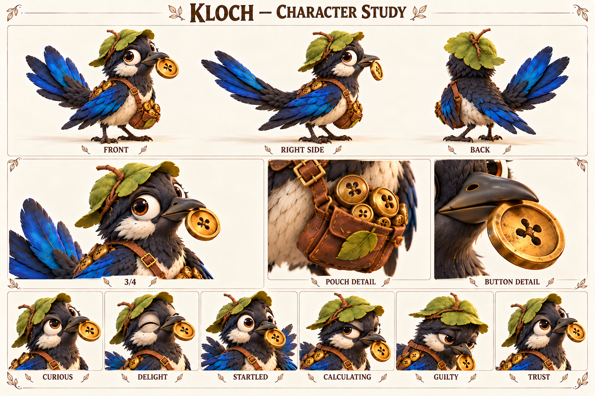

Чего хочет
Сделать самое красивое и уютное собрание маленьких сокровищ.
Собирает блестящие вещи и учится замечать историю их владельцев.
Разговорчивая сказочная сорока-коллекционер; самостоятельный обитатель мира.

Чёрно-молочная сорока; кобальтовые крылья; листовая шапочка; пуговица; мешочек.
Палитра: Чернильный / молочный / кобальтовый.
Клоч строит уют из маленьких находок: гладкой пуговицы, кусочка проволоки, светлой скорлупки. Ему нравится не цена вещи, а то, как она ловит свет и чем отличается от соседней. Он может долго выбирать место одной пуговице и гордиться удачной перестановкой. Листовая шапочка и мешочек делают его собирателем с собственным вкусом, а не случайной птицей у дороги.
Проблема появляется, когда Клоч считает оставленное без присмотра ничьим. Однажды он унёс красивую застёжку и только потом увидел, что без неё у хозяина не закрывается сумка. Вернуть находку оказалось труднее, чем взять: пришлось признать, что удовольствие было не только его. Рабочая биография оставляет место таким маленьким конфликтам; старую историю с линзой не возвращаем в нынешнее демо.
Будущая задача Клоча — устроить обмен, где у каждой находки есть понятное происхождение. Он всё ещё будет соблазняться блеском, но научится спрашивать и иногда приносить вещь обратно без награды. Особенно хороша сцена, в которой он замечает потерю раньше хозяина и сам предлагает поиск: его внимательность наконец работает не только на собственную коллекцию.
Сделать самое красивое и уютное собрание маленьких сокровищ.
Понимать чужое владение и радоваться обмену, а не присвоению.
Остаться без запаса, красоты и места, которое считает своим.
Быстро придумывает удобное оправдание: «лежало — значит, свободно».
Наблюдательность, память на детали, изобретательность и умение находить потерянное.
Помнит каждую царапинку на пуговице, но сначала забывает о человеке, которому она нужна.
Темп и ритм. Отрывисто, быстро; повторяет особенно понравившееся слово. Как сказочная птица может говорить короткими фразами.
Слова и построение фразы. Блестит, нашёл, моё, поменяемся, красивое. Позже появляется важное «твоё».
Юмор. Самодовольная точность о незначительной вещи и запоздалое понимание очевидного.
Под давлением. Тараторит оправдания, прячет находку под крыло.
Как проявляет заботу. Приносит подходящую мелочь и спрашивает, нужна ли она.
Чего избегать. Не делать злым вором, бесконечно жадным карикатурным торговцем или возвращать обязательную линзу.
| Ситуация | Реплика или действие |
|---|---|
| Находка | Круглая. Золотая. Почти солнце. Только пуговица. |
| Отговорка | Она лежала! Очень отдельно лежала. |
| Вопрос | Твоя? А почему ты без неё ходишь? |
| Признание | Взял без спроса. Вот. Целая. |
| Обмен | Мне синюю. Тебе вот эту. Согласен? |
| Забота | Ты потерял застёжку? Я запомнил, какая она. |
| Подпись на листе | Состояние | Актёрская задача |
|---|---|---|
| CURIOUS | Любопытство | Наклон головы и один глаз к предмету. |
| DELIGHT | Восторг | Перья слегка подняты, клюв приоткрыт. |
| STARTLED | Испуг | Корпус вытягивается, крылья прижаты. |
| CALCULATING | Расчёт | Взгляд переводится между двумя находками. |
| GUILTY | Вина | Голова ниже, предмет больше не спрятан. |
| TRUST | Доверие | Спокойная посадка и открытое предложение находки. |
Движение: Птичьи быстрые повороты головы, два шага и остановка. Эмоции через веки, перья и посадку, без человеческих губ или дополнительных рук.
| План | Что показывает |
|---|---|
| Общий план спереди | Силуэт, лицо, одежда, положение ступней; без потери главных признаков. |
| Боковой ракурс | Глубина фигуры, профиль лица, предметы на ремнях и посадка одежды. |
| Вид со спины | Причёска, крепления, рюкзак либо панцирь; признаки не зеркалятся. |
| Средний план в три четверти | Лицо вместе с характерным жестом и позой корпуса. |
| Крупные детали | Материал и узнаваемые предметы; особенности лица, уха, руки или панциря. |
| Шесть эмоциональных портретов | Взгляд, брови, рот и положение головы; у существ также усики, крылья и поза. |
Честная ярмарка находок и история возвращённой застёжки.